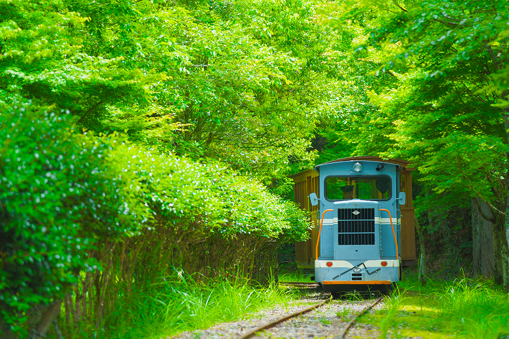
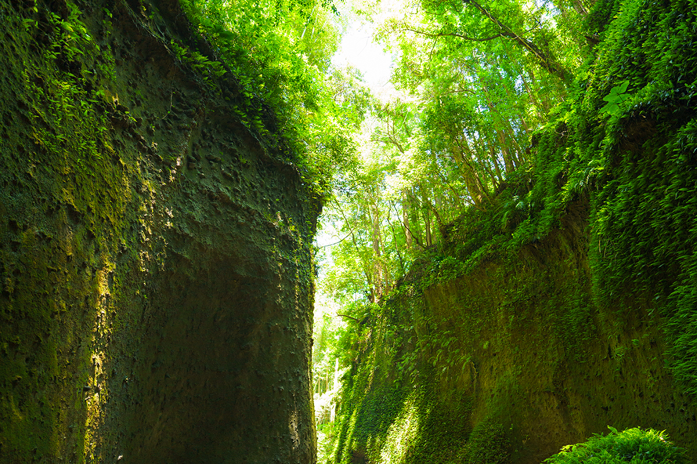
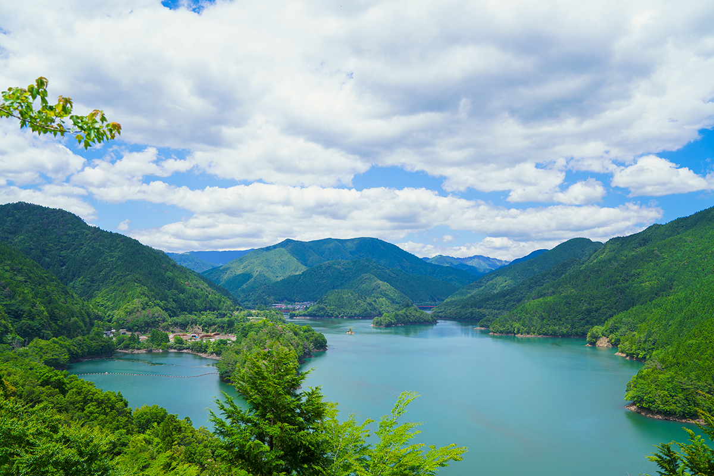
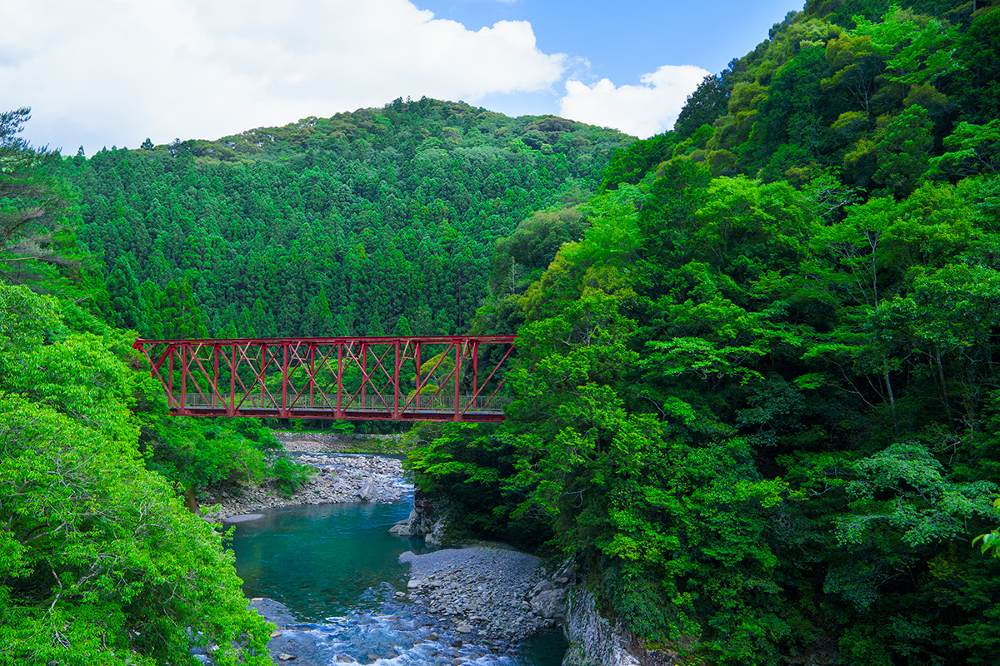
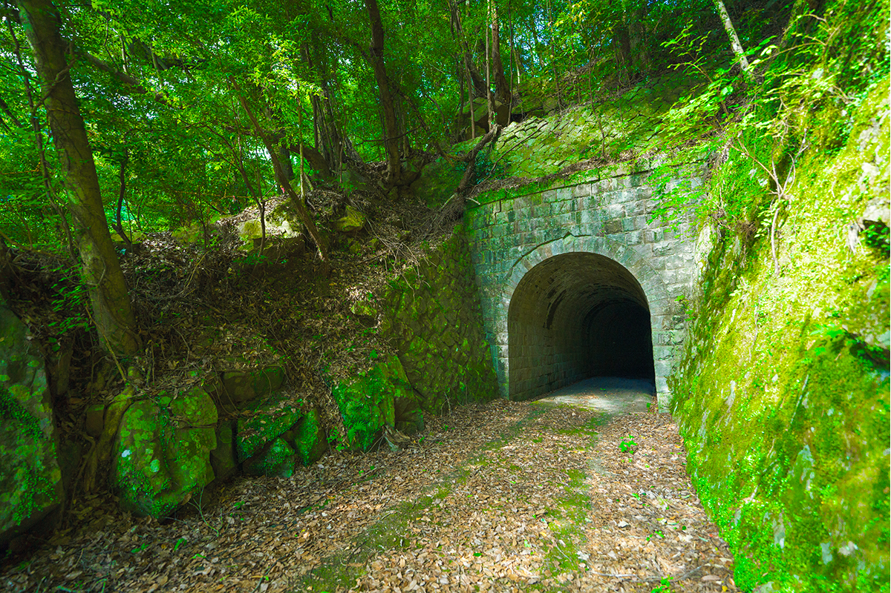
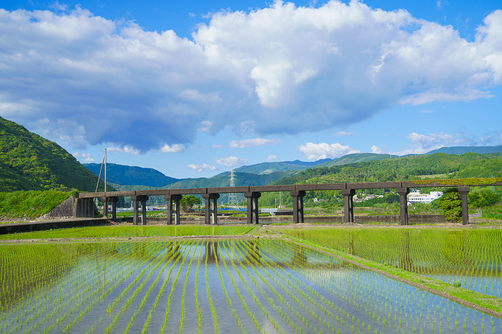
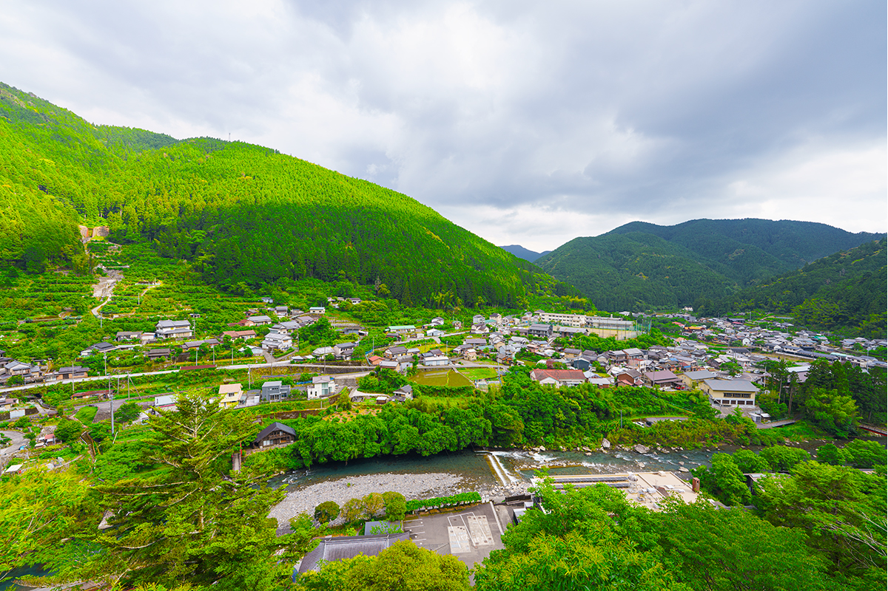
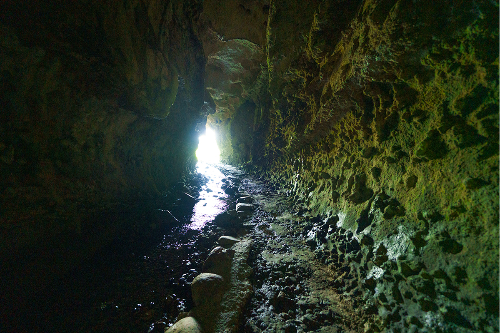

Префектура Коти · восток префектуры · железная дорога и природа
„Гасо“: лесная железная дорога Янасэ и мост Мёдзингути

У Коти репутация края, где культуру можно не смотреть, а потрогать. На этот раз сюжет совсем лесной: узкоколейка, сто лет возившая деревья к морю, и пять мест, где её следы сохранились до сих пор.
Горы и деревья
Поезд, которого ждали и боялись
Янасэ-суги, древесина из гор деревни Умадзи, была настолько хороша, что её преподносили самому Хидэёси Тоётоми (1537–1598), полководцу, объединившему Японию в конце XVI века. Окрестные деревни, прежде всего сам Умадзи, жили лесом: в конце эпохи Мэйдзи, чтобы доставлять стволы к побережью, здесь проложили лесную железную дорогу Янасэ. Она оставалась единственным транспортом в этих горах и возила не только дерево: с условием «без гарантии на жизнь» по ней ездили и люди.

Для местного жителя, выросшего здесь, дорога осталась тёплым воспоминанием детства. «Люди гор зовут её ласково, „Гасо“. Профессия машиниста была мечтой», рассказывает он. Потом дорога закрылась: колею затопило чашей строящейся дамбы Янасэ. А в годы высоких темпов роста дешёвое импортное дерево добило и само лесное дело. Люди переключились на юдзу: сегодня Коти держит первое место в стране по его урожаю, история этих мест попала в список японского наследия, а следы железной дороги стали её символом.
Но на этом история не кончилась: стараниями местных жителей, и этого человека в их числе, дорогу восстановили. Теперь восстановленный состав ходит по парку Маруяма, и он сам встаёт к рычагам. «Кто бы мог подумать, что после шестидесяти я сяду за руль машиниста». В горах, с изрядной ностальгией на борту, поезд снова идёт по кругу.
«Люди гор зовут её ласково, „Гасо“. Профессия машиниста была мечтой».
местный житель, выросший у дороги
Следы дороги
Двести пятьдесят километров лесовозной колеи
Дорога работала на территории пяти муниципалитетов. Общая длина сети, 250 километров, делала её крупнейшей в западной Японии. Память о ней хранят уцелевшие сооружения: они внесены в реестр наследия индустриальной модернизации, а 18 инженерных сооружений получили статус важных культурных ценностей страны.
Дальше маршрут по следам колеи, от воды к морю.
Дамба Янасэ
Завершена в 1970 году. Именно её строительство затопило посёлок Янасэ и поставило точку в работе железной дороги. С обзорной площадки открывается подавляющий вид на озеро.

Мост Мёдзингути
Красная стальная ферма 1929 года постройки эффектно выступает на фоне горной зелени. По решётчатому настилу можно пройти пешком, глядя на реку Ясуда прямо под ногами: острые ощущения гарантированы.

Тоннель Банда-дзима
Каменный тоннель 1911 года, 37,5 метра в длину. Он сохранил облик первых лет дороги; мох на бетоне придаёт ему ностальгический вид.

Эстакада Тацуока № 2
Построена в 1933 году для пути от развилки Тацуока к лесоскладу в Нахари. Высокая галерея, пущенная между полями, возвращает пейзажам той эпохи их прежний вид.

Смотреть сверху или снизу
Фуникулёр в лесу и пещера у моря
Для тех, кто хочет почувствовать дорогу телом, есть два маршрута.
Вверх: «инклайн» в Умадзи
Гидравлическая установка, когда-то подававшая брёвна, превратилась в маленький фуникулёр: ветер в лицо, тоннель из деревьев и смотровая площадка наверху, с которой деревня Умадзи лежит как на ладони. Рядом стоит и восстановленный состав лесной дороги Умадзи.

Вниз: морская пещера Иокидо
Скальный грот, который волны выточили в породе около 300 миллионов лет назад. Внутри живут летучие мыши, а в глубине разрастаются больше сорока видов папоротников: свет, пробивающийся сквозь свод, и прохладный воздух делают место похожим на другой мир.

Лесная железная дорога Янасэ
- Адрес
- префектура Коти, уезд Аки, деревня Умадзи, Янасэ-Маруяма
- Телефон
- +81 887-43-2055
- Часы работы
- 10:00–15:30 (перерыв 12:00–13:00)
- Выходные
- понедельник–суббота; в августе работает и по субботам; в остальные дни по договорённости (доплата 1000 иен за группу)
- Цены
- поездка: взрослые (средняя школа и старше) 600 иен, дети (с 3 лет) 300 иен; поездка с вождением: 1500 иен для школьников и старше
Дамба Янасэ
- Адрес
- префектура Коти, уезд Аки, деревня Китагава (обзорная площадка дамбы Янасэ)
Мост Мёдзингути
- Адрес
- префектура Коти, уезд Аки, посёлок Ясуда, Огава
Тоннель Банда-дзима
- Адрес
- префектура Коти, уезд Аки, посёлок Ясуда, Ётоко
Эстакада Тацуока № 2
- Адрес
- префектура Коти, уезд Аки, посёлок Тано
Инклайн
- Адрес
- префектура Коти, уезд Аки, деревня Умадзи, Умадзи, 3564-1
- Телефон
- +81 887-44-2026
- Часы работы
- 8:30–16:30
- Выходные
- понедельник–суббота
- Цены
- 400 иен за поездку
Иокидо
- Адрес
- префектура Коти, город Аки, Иоки, 117
- Телефон
- +81 887-34-8344 (туристический информационный центр Аки)
Фото: Томоаки Окуяма.